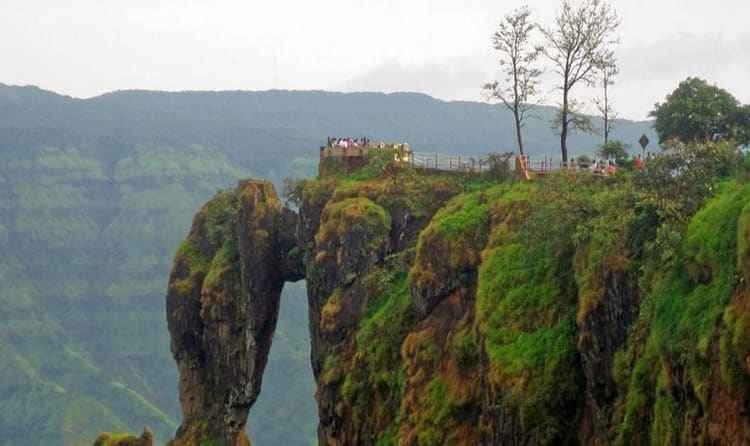
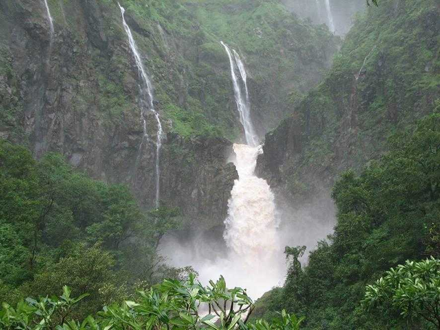

Mahabaleshwar is a hill station located in the Western Ghats, in Satara district of Maharashtra. Apart from its strawberries, Mahabaleshwar is also well known for its numerous rivers, magnificent cascades and majestic peaks. It is among the most sought after weekend getaways from Pune & Mumbai, located about 120km south-west of Pune and 285km from Mumbai.
Mahabaleshwar is also a sacred pilgrimage place for Hindus as the Krishna river originates from here. Once a summer capital of the British, the hill station of Mahabaleshwar comprises of ancient temples, boarding schools, manicured and lush green dense forest, waterfalls, hills, valleys. It is often used as a base to visit the magnificent Pratapgad Fort, located an hour away.